KOLMAS VIIKKO

Suuria iloja ja suuri suru
3.5.
Kolmannen viikon alussa valkeat lapset liikkuivat jo pelkästään kävellen ja näkökyky alkoi parantua päivä päivältä. Pentulaatikon reunalla istuskelevia ihmisiä alettiin jo ihan oikeasti havaita paremmin, ja reunaa vasten alettiin jo nousta takajaloilleenkin. Päivittäiset punnitukset olivat välillä melkoisia "taisteluita" pentujen ollessa sitä mieltä että punnituskorissa ei todellakaan ollut kivaa olla rauhassa ja paikallaan.
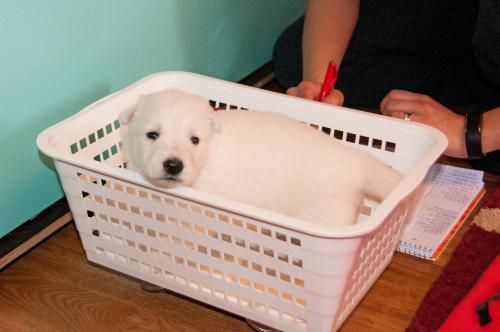
Kun silmät oli nyt saatu kunnolla auki, alkoi saman tien pentulaatikossa myös kova "alkeisleikki"; kaveria koitettiin purra mistä vaan kiinni saatiin ja pieniä tapporavistusyrityksiäkin nähtiin.
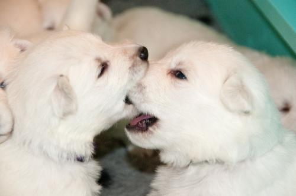
Lila ja Harmaa tyttö mittailevat leukojaan
Leikkimisen lisäksi pennut alkoivat myös harjoitella äänenkäyttöä oikein kunnolla. Susimaista ulvontaa ja hiukan enemmän koiramaista haukuntaakin kuului milloin kenenkin suusta.
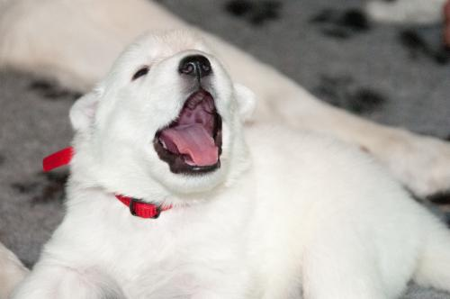
Pentujen ollessa 16 päivän ikäisiä oli ensimmäinen "pentukurssi" käyty, eli siihen loppui systemaattinen päivittäin tehty Bio Sensor-ohjelma. Vaikka kaikenlaista toimintaa alkoikin olla enemmän ja enemän, olivat Nuka-äidin kanssa pentulaatikkossa oleilu, nukkuminen ja tietenkin syöminen ne kaikkein tärkeimmät puuhat edelleen. Maanantain ja tiistain välisenä yönä olikin sitten ensimmäinen hurjapää onnistunut kiipeämään pentulaatikon reunan yli; tämän kunnian sai herra Vihreä! :-) Aamulla tämä poika köllötteli varsin tyytyväisenä Nukan peitolla pentulaatikon vieressä, ja kaikesta päätellen äiti oli pitänyt pojasta yön aikana hyvää huolta; painoa oli tullut 217g lisää yhdessä yössä!! :-) Aamulla sitten vaihdettiin pentulaatikkoon 10 cm korkeammat laidat, niiden avulla pennut ehkä pysyvät pesässään reilun viikon verran lisää.
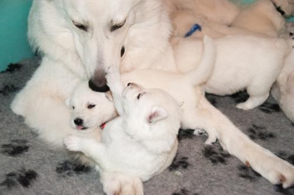
Harmaa tyttö läppää mammaa kuonoon
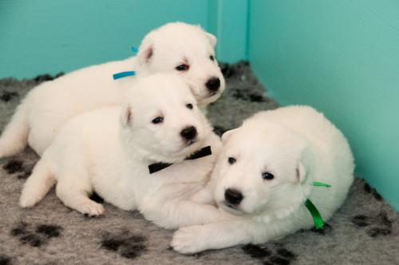
Pikkuherrat Sininen, Musta ja Vihreä
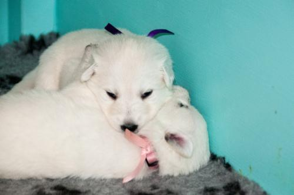
Tytöt Lila ja Vaaleanpunainen lepäilevät
Keskiviikosta muodostui sitten suuren surun päivä. Keltainen tyttö, jo heti syntymästään asti se kaikista raivoisimmin eteenpäin yrittänyt ja kovaan ääneen huutanut pikkuinen, oli aiheuttanut pientä epävarmuutta ja huolta jo pidempään. Oliko tytöllä kaikki kunnossa? Paino lisääntyi kuten muillakin, mutta tissin löytäminen aiheutti aina kovasti työtä ja vaati välillä paljon apuakin. Lisäksi eteneminen oli usein pelkkää kehän kiertämistä, aina samaan suuntaan vasemmalle. Oli ollut parempia päiviä ja huonompia päiviä, mutta keskiviikkona vointi huononi selkeästi ja ero muihin alkoi olla varsin selkeä. Pää oli vinossa vasemmalle, tyttö kiersi vain kehää ja kaaduttuaan ei meinannut päästä millään ylös. Oli pakko myöntää tosiasia, että Keltainen pentu ei ollut terve vaan selvästi neurologisesti synnynnäisesti kehitysvammainen. Oli aika luovuttaa.
Nuku hyvin kaunis Keltainen siellä jossain missä pienten koiranpentujen on ikuisesti hyvä olla. Meillä on niin ikävä sinua... ♥ ♥ ♥
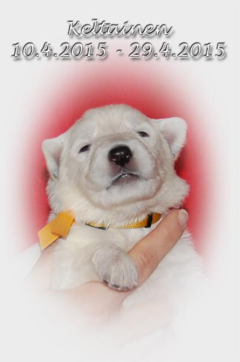
Suuren surun keskellä muut pikkuiset piristivät mieltä ja antoivat lohtua. Niiden halu pois pentulaatikosta alkoi lisääntyä kohti kolmannen viikon loppua, ja välillä pikkuiset pääsivätkin vähän "suurta maailmaa" ihmettelemään. Reippaasti reviiriä alettiin laajentaa olohuoneen matolle ja vähän sen reunojen ulkopuolellekin.
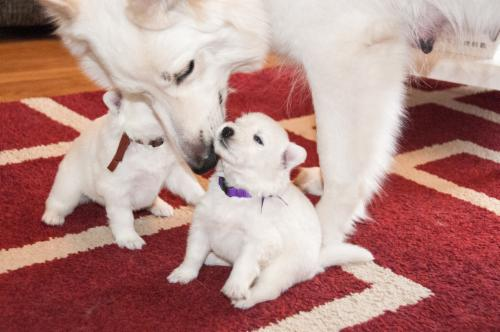
Ja sitten olikin jäljellä vielä pentujen kolmannen viikon ehdoton kohokohta; ensimmäinen liha-ateria! Se tarjoiltiin vappuaaton kunniaksi torstaina, ja täytyy taas kerran todeta, että kyllä koira vaan on lihansyöjä. :-) Siinä oli mennä sormet mukana, kun pennut valtavalla innolla maistelivat ensimmäisiä kiinteäitä suupalojaan.
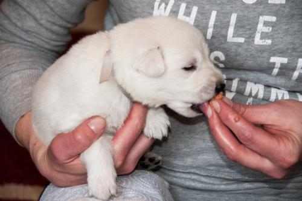
Neiti Harmaa maistelee lihaa
Ja jälleen lopuksi vielä pentujen potretit kolmen viikon iässä, nyt myös istumakuvan kera! :-D
PENNUT 3 VIIKKOA
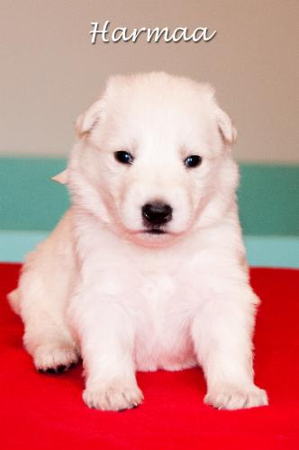
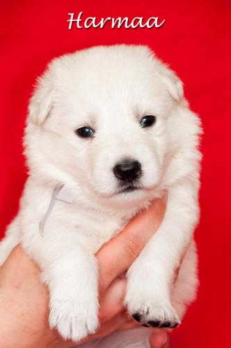
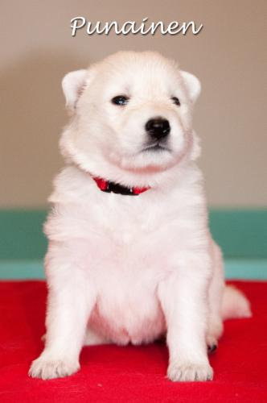
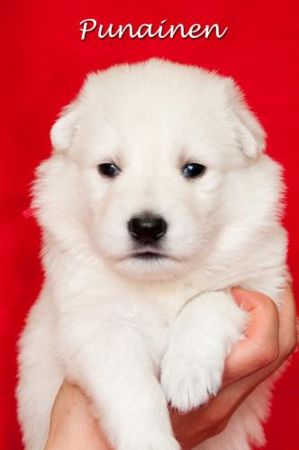
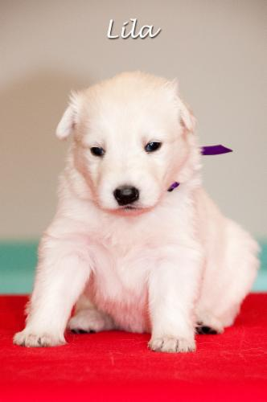
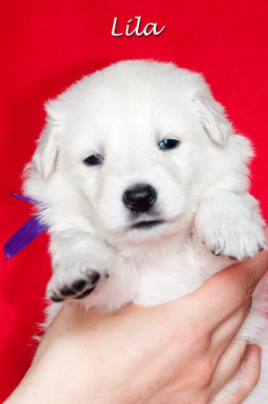
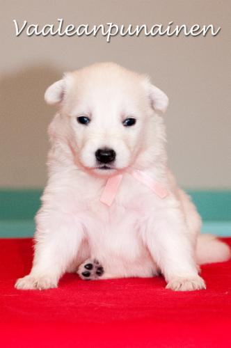
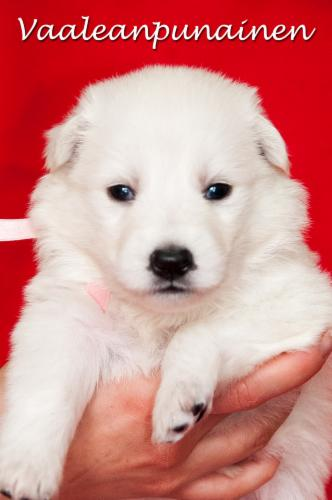
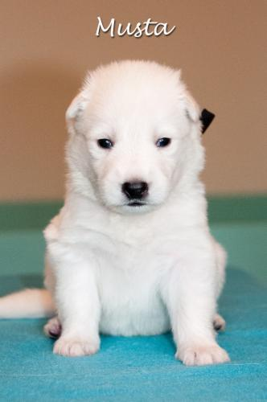
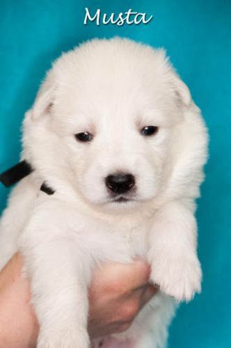
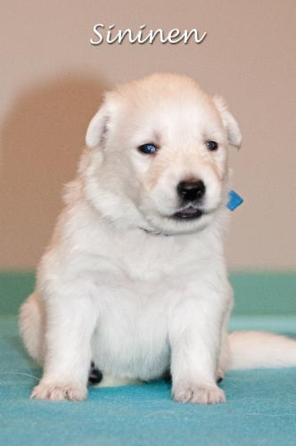
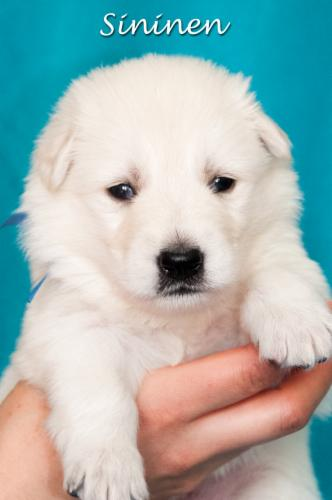
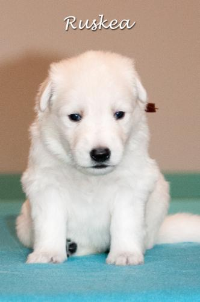
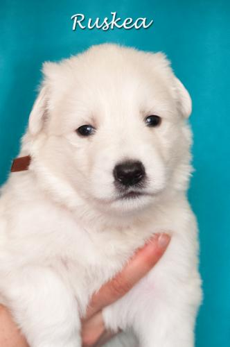
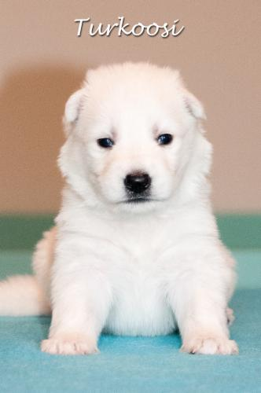
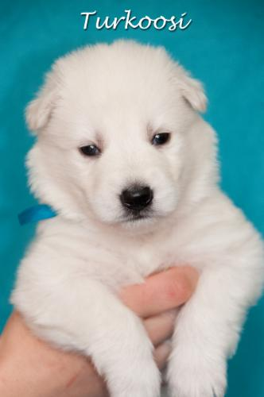
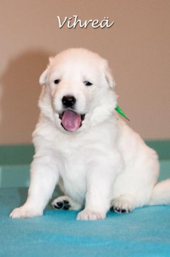
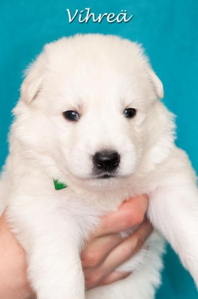